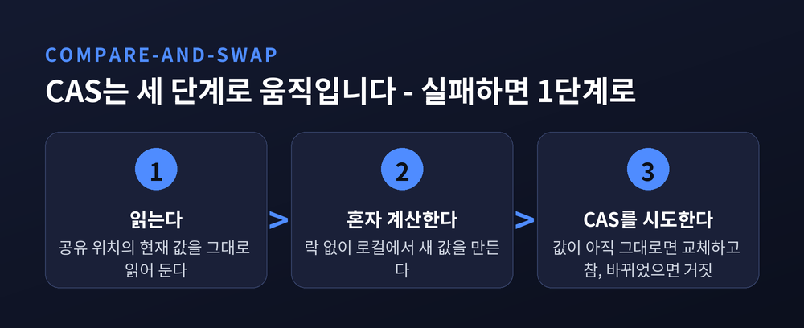
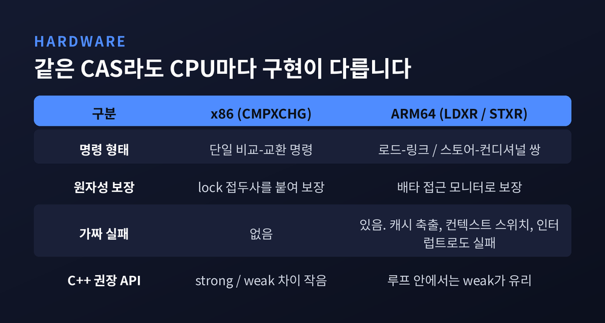
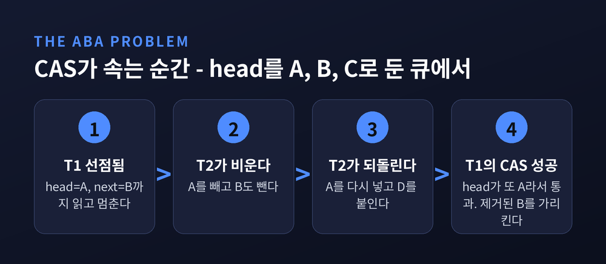
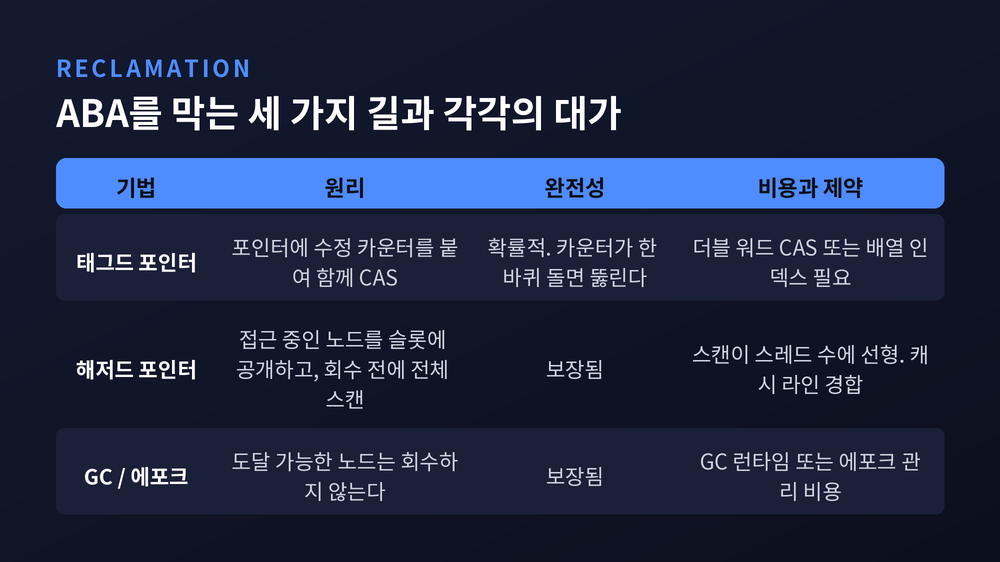
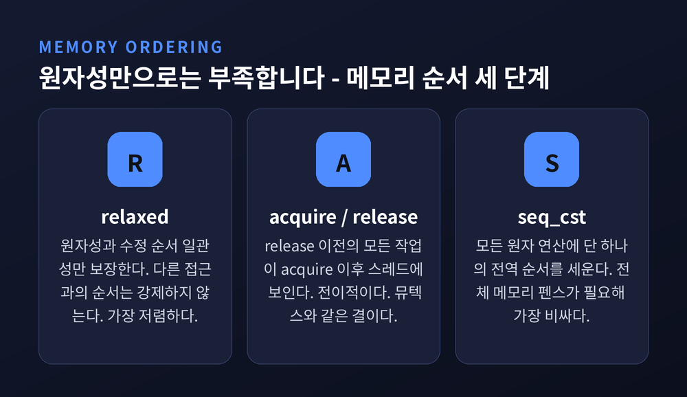
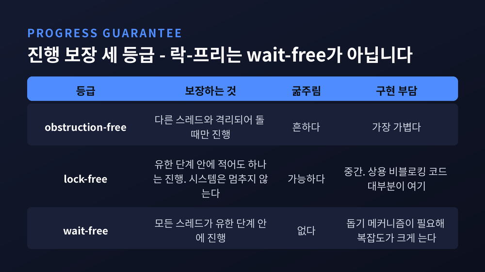

이번 글에서는 락-프리(lock-free) 자료구조가 어떤 원리로 동작하는지 정리해 보겠습니다.
뮤텍스를 쓰지 않고도 여러 스레드가 같은 스택이나 큐를 안전하게 나눠 쓰는 방법, 그 대가로 치르는 비용까지 함께 다룹니다.
세 줄 요약
CAS는 Compare-And-Swap의 약자입니다. 1996년 Michael과 Scott의 논문이 붙인 정의가 가장 간결합니다.
인자를 세 개 받습니다. 공유 메모리 위치의 주소, 그 자리에 들어 있으리라 기대하는 값, 그리고 바꿔 넣을 새 값입니다.
해당 위치가 기대값과 같으면 새 값을 원자적으로 써 넣고 참을 돌려줍니다. 다르면 메모리를 전혀 건드리지 않고 거짓을 돌려줍니다.
이 명령이 처음 도입된 하드웨어는 IBM System/370이었습니다.
접근 방식의 차이를 한 줄로 말하면 이렇습니다.
예전 방식인 락은 비관적입니다. 먼저 문을 잠그고, 아무도 못 들어오게 한 다음 작업합니다.
CAS는 낙관적입니다. 일단 값을 읽고 혼자 계산한 뒤, 저장을 시도합니다. 실패하면 루프로 돌아가 처음부터 다시 합니다.
실패가 곧 손해는 아닙니다. 내 CAS가 실패했다는 것은 그 사이 누군가 성공했다는 뜻이기 때문입니다.
이 한 문장이 락-프리 알고리즘 증명의 뼈대입니다.

같은 CAS라도 CPU마다 구현이 다릅니다. 이 차이가 실무에서 생각보다 자주 발목을 잡습니다.
x86 계열에는 CMPXCHG 명령이 있습니다. AL·AX·EAX·RAX 레지스터의 값을 목적지와 비교해, 같으면 소스를 목적지에 적재하고 다르면 목적지의 값을 레지스터로 가져옵니다. 멀티프로세서에서 원자성을 보장하려면 lock 접두사를 붙입니다.
ARM64는 사정이 다릅니다. x86 같은 방식의 네이티브 CAS 명령이 없고, 대신 LL/SC라 부르는 두 명령 쌍을 씁니다. LDXR(load register exclusive)로 읽고 STXR(store register exclusive)로 조건부 저장을 합니다.
여기서 한 가지를 기억하실 필요가 있습니다. LL/SC의 조건부 저장은 다른 스레드가 값을 전혀 건드리지 않았는데도 실패할 수 있습니다. 캐시 라인 축출, 컨텍스트 스위치, 분기 예측기 플러시, 하필 그 순간 도착한 인터럽트 같은 이유 때문입니다. 이를 가짜 실패(spurious failure)라 부릅니다.
C++에서 compare_exchange_weak와 compare_exchange_strong이 나뉘어 있는 이유가 바로 이것입니다. 어차피 루프 안에서 재시도할 것이라면, 가짜 실패를 허용하는 weak 쪽이 LL/SC 아키텍처에서 더 효율적입니다.

최초로 공개된 락-프리 자료구조는 스택이었습니다.
R. Kent Treiber가 1986년 4월 IBM 알마덴 연구소의 기술 보고서 RJ 5118, "Systems Programming: Coping with Parallelism"에서 발표했습니다.
구조는 놀랄 만큼 단순합니다. 스택을 단일 연결 리스트로 만들고 top 포인터 하나만 둡니다. 그리고 그 포인터를 오직 CAS로만 바꿉니다.
push는 이렇게 진행됩니다. 현재 top을 읽고, 새 노드의 next를 그 값으로 연결한 뒤, CAS(&top, 예전 top, 새 노드)를 시도합니다. 실패하면 그 사이 누가 push한 것이니 처음부터 다시 합니다.
pop도 대칭입니다. top을 읽고, 그다음 노드를 새 top 후보로 삼아 CAS합니다.
전체 알고리즘이 열 줄 남짓입니다. 그런데 이 단순함이 곧바로 문제를 하나 불러옵니다.
ABA 문제의 정의는 이렇습니다. 어떤 메모리 위치를 두 번 읽었는데 두 번 다 같은 값이었습니다. 그런데 그 사이에 다른 스레드가 값을 바꾸고, 다른 작업을 하고, 다시 원래 값으로 되돌려 놓았습니다. 첫 번째 스레드는 아무것도 변하지 않았다고 착각합니다.
카네기멜론 SEI의 CERT C 코딩 표준이 드는 예가 구체적입니다.
큐가 head → A → B → C 상태일 때, 스레드 T1이 dequeue를 시작해 head=A, next=B까지 읽은 다음 선점당합니다.
그 사이 스레드 T2가 일을 벌입니다. A를 제거하고, B를 제거하고, A를 다시 넣고, C를 제거하고, 새 노드 D를 넣습니다. 큐는 이제 head → A → D입니다.
T1이 다시 깨어납니다. 자기가 기억한 head는 A였고, 지금 head도 A입니다. CAS가 성공합니다. 그리고 head를 이미 제거된 노드 B로 바꿔 놓습니다.
결과는 해제된 메모리를 가리키는 포인터입니다. 회수된 메모리가 이미 운영체제로 반환된 상태였다면 그 순간 치명적인 접근 위반 오류가 납니다.
근본 원인은 포인터 비교 자체가 아닙니다. 제거된 노드의 메모리가 재사용되기 때문입니다. ABA는 결국 메모리 회수 문제입니다.
성가신 점이 하나 더 있습니다. 이런 결함은 테스트로 잡기가 대단히 어렵습니다. 문제가 되는 사건 순서가 극히 드물게만 나타나기 때문입니다. 모델 체킹 같은 정형 검증 기법이 권장되는 이유가 여기 있습니다.

첫째는 태그드 포인터입니다. 포인터 옆에 수정 카운터를 붙이고, 읽기-수정-CAS 과정에서 항상 둘을 함께 다루며 CAS가 성공할 때마다 카운터를 올립니다.
다만 Michael과 Scott은 정직하게 한계를 적었습니다. 이 방법은 ABA가 일어나지 않는다고 보장하지는 못하고, 다만 극히 드물게 만들 뿐입니다. 카운터가 한 바퀴 돌면 뚫립니다.
구현에도 제약이 있습니다. 포인터와 태그를 한 번의 원자 연산으로 바꿔야 하므로, 포인터 두 배 크기를 다루는 더블 워드 CAS를 쓰거나, 포인터 대신 배열 인덱스를 써서 한 워드에 밀어 넣어야 합니다.
둘째는 해저드 포인터입니다. Maged Michael이 2004년 IEEE Transactions on Parallel and Distributed Systems 15권 8호 491~504쪽에 발표한 기법입니다.
핵심은 스레드마다 보통 한두 개의 공유 포인터 슬롯을 두는 것입니다. 쓰기는 소유 스레드만 하고, 읽기는 모두가 합니다. 자기가 지금 접근 중인 노드를 거기에 공개해 둡니다.
Alexandrescu와 Michael이 남긴 비유가 인상적입니다. 그것은 다른 스레드에게 "나 지금 이거 읽는 중이다, 교체는 해도 좋지만 delete할 생각은 하지 마라"라고 알리는 행위라는 것입니다.
노드를 지우려는 스레드는 곧바로 해제하지 않고 '나중에 해제할 목록'에 넣습니다. 목록이 임계치에 이르면 스캔을 돕니다. 모든 스레드의 해저드 슬롯을 훑어 사용 중인 주소를 모으고, 거기에 없는 노드만 재사용 가능으로 판정합니다.
이 기법은 C++26에 std::hazard_pointer로 표준에 들어갔습니다. 2002년 IBM이 낸 관련 특허 출원은 2010년에 포기되었습니다.
셋째는 GC와 에포크 기반 회수입니다. 가비지 컬렉션이 있는 환경에서는 노드가 도달 가능한 한 회수되지 않으므로 ABA가 구조적으로 사라집니다.
자바의 ConcurrentLinkedQueue 문서가 이 점을 명시합니다. GC 시스템에서는 노드 재활용으로 인한 ABA가 없으므로 카운티드 포인터 같은 기법이 필요 없다고 적혀 있습니다.
참고로 네 번째 후보였던 참조 카운팅은 실험에서 무너졌습니다. Michael과 Scott이 Valois의 방식을 시험해 보니, 최대 길이가 12개뿐인 큐에 6만 4천 개의 노드로 초기화한 프리 리스트를 주고 1천만 번의 enqueue와 dequeue를 돌렸는데도 메모리가 여러 차례 고갈되었습니다. 한 프로세스가 포인터를 잡은 채 지연되면 그 뒤의 노드 전부가 해제 불가 상태로 묶이기 때문입니다.

락-프리 큐의 표준이 된 알고리즘은 1996년 5월 PODC 학회 267~275쪽에 실렸습니다. 흔히 MS-큐라 부릅니다.
구조부터 보겠습니다. 단일 연결 리스트에 Head와 Tail을 둡니다. 여기서 Head는 언제나 더미 노드를 가리킵니다. 실제 데이터는 그다음부터입니다.
더미 노드를 둔 덕분에 빈 큐와 원소 한 개짜리 큐의 특수 처리가 사라집니다. enqueue하는 쪽은 Head를 볼 일이 없고, dequeue하는 쪽은 Tail을 볼 일이 없습니다.
이 알고리즘에서 가장 흥미로운 지점은 enqueue가 두 단계라는 것입니다.
먼저 마지막 노드의 next에 새 노드를 CAS로 연결합니다. 그다음 Tail을 새 노드로 옮기는 CAS를 합니다.
문제는 두 단계 사이에 다른 스레드가 끼어들 수 있다는 점입니다. 그 순간 Tail은 끝에서 두 번째 노드를 가리키는 '뒤처진' 상태가 됩니다.
해법이 우아합니다. 그 상태를 발견한 스레드가 자기 일을 하기 전에 대신 Tail을 앞으로 밀어줍니다. dequeue하던 스레드도 똑같이 밀어줍니다.
이것이 락-프리 알고리즘의 전형적인 돕기(helping) 패턴입니다. 남의 미완성 작업을 대신 마무리해 주는 것으로 전체의 진행을 보장합니다.
논문은 이 큐가 선형화 가능(linearizable)하다는 것도 보였습니다. enqueue는 새 노드가 마지막 노드에 연결되는 순간, dequeue는 Head가 다음 노드로 넘어가는 순간 효력이 발생합니다. 외부 관찰자에게는 모든 연산이 어느 한 시점에 즉시 일어난 것처럼 보입니다.
한 가지는 솔직히 짚어야겠습니다. 논문의 안전성 증명은 "ABA 문제가 절대 일어나지 않는다고 가정하고" 전개됩니다. 바꿔 말하면 메모리 회수 문제를 따로 풀지 않으면 이 증명은 성립하지 않습니다.
이 알고리즘은 지금도 현역입니다. 자바의 java.util.concurrent.ConcurrentLinkedQueue가 이 논문을 명시적으로 인용하며 구현되어 있습니다.
CAS가 원자적이라는 사실만으로는 안전하지 않습니다.
CPU와 컴파일러는 성능을 위해 메모리 연산의 순서를 바꿉니다. "노드를 다 채워 놓고 top을 CAS한다"고 쓴 코드가 다른 코어에도 그 순서대로 보인다는 보장은 없습니다.
그래서 원자 연산마다 메모리 순서를 지정합니다. 크게 세 단계입니다.
| 메모리 순서 | 보장하는 것 | 비용 |
|---|---|---|
| relaxed | 원자성과 수정 순서 일관성만. 동시 접근 사이의 순서는 강제하지 않음 | 가장 저렴 |
| acquire / release | release 이전의 모든 작업이 acquire 이후 스레드에 보임. 전이적 | 중간 |
| seq_cst | 위에 더해 모든 원자 연산에 단 하나의 전역 순서를 세움 | 전체 메모리 펜스 필요, 가장 비쌈 |
acquire와 release의 관계는 뮤텍스를 떠올리면 쉽습니다. A 스레드가 락을 풀고 B 스레드가 그 락을 잡으면, A가 임계 구역에서 한 모든 일이 B에게 보여야 합니다. 원자 변수로 같은 일을 하는 것이 release-acquire 동기화입니다. 전이성도 성립해서, 세 번째 스레드까지 사슬처럼 이어집니다.
가장 강한 seq_cst는 편하지만 값이 비쌉니다. 모든 멀티코어 시스템에서 전체 메모리 펜스 명령을 요구합니다. C++와 러스트가 이것을 기본값으로 삼은 이유는, 틀리기 어려운 쪽을 기본으로 두는 편이 낫다고 판단했기 때문입니다.
락-프리 스택에 대입하면 이렇습니다. 새 노드의 필드를 모두 채운 뒤 top을 release로 CAS하고, 읽는 쪽은 acquire로 읽습니다. 그래야 노드 내용이 온전히 건너갑니다.

자주 섞여 쓰이지만 셋은 엄연히 등급이 다릅니다. 약한 쪽부터 보겠습니다.
obstruction-free는 스레드가 다른 스레드와 격리되어 실행될 때만 진행을 보장합니다. 충돌하는 스레드가 둘 이상 동시에 돌면 보장이 사라집니다.
lock-free는 스레드들이 서로 방해하더라도 유한한 단계 안에 적어도 하나는 진행합니다. 시스템은 멈추지 않습니다. 다만 특정 스레드가 계속 밀려나 굶주릴 수는 있습니다.
wait-free는 모든 스레드가 유한한 단계 안에 진행합니다. 다른 스레드가 무슨 짓을 하든 상관없습니다.
그렇다면 왜 다들 wait-free로 만들지 않을까요.
비용 때문입니다. 같은 문제를 lock-free에서 wait-free로 끌어올리려면 대개 전용 돕기 메커니즘을 넣어야 하는데, 이것이 설계 복잡도와 시간 복잡도를 함께 크게 올립니다. 실제로 상용 비블로킹 코드의 대부분은 lock-free에 머뭅니다.
그런데 2013년 Alistarh, Censor-Hillel, Shavit의 연구가 흥미로운 답을 내놓았습니다.
논문 제목부터가 "락-프리 동시성 알고리즘은 실질적으로 wait-free인가?"입니다. 결론은 상당 부분 그렇다는 쪽입니다. 실제 하드웨어의 스케줄링에 가까운 확률적 스케줄러 모델 아래에서, 유계 락-프리 알고리즘은 확률 1로 wait-free가 됩니다. 특정 스레드가 영원히 진행하지 못하는 스케줄은 확률 질량이 0이기 때문입니다.
저자들도 단서를 달았습니다. 이 관찰만으로는 락-프리 자료구조가 왜 '효율적'인지까지 설명하지 못한다는 것입니다. 임의의 알고리즘에 대해 성립하다 보니 나오는 상한이 실용적으로 쓰기엔 너무 큽니다.

여기서부터는 기대를 조금 낮추셔야 합니다.
Michael과 Scott은 1996년 논문에서 12프로세서짜리 Silicon Graphics Challenge 멀티프로세서로 실험했습니다. 각 프로세스가 enqueue, 약 6마이크로초의 다른 작업, dequeue, 다시 다른 작업을 반복하게 하고 총 1백만 회의 enqueue/dequeue 쌍을 돌렸습니다.
결과는 대체로 락-프리의 손을 들어줍니다. 프로세서가 세 개 이상 활성일 때 새 비블로킹 큐가 모든 대안을 앞섰습니다. 투-락 큐는 전용 시스템에서 프로세서가 다섯 개를 넘을 때 싱글 락을 이겼습니다.
멀티프로그래밍 환경에서는 격차가 더 벌어졌습니다. 운영체제의 스케줄링 퀀텀이 10밀리초인 환경에서, 락 기반 알고리즘은 부적절한 시점의 선점 한 번에 시스템 전체가 묶였습니다. 락-프리의 진짜 강점은 여기 있습니다.
그런데 같은 논문에 이런 대목도 있습니다.
프로세서가 한 개일 때는 첫 루프를 뺀 대부분의 메모리 참조가 캐시에 적중해 완료 시간이 아주 낮았습니다. 프로세서가 두 개가 되는 순간 Head와 Tail 포인터를 두고 경합이 생겨 캐시 미스가 급증했고, 완료 시간이 크게 올라갔습니다.
오른쪽 끝, 즉 프로세서를 더 늘린 구간에서도 대부분의 알고리즘에서 시간이 다시 올라갔습니다. 높은 경합률이 캐시 미스 한 건의 평균 비용까지 끌어올린 것으로 논문은 해석합니다.
현대 하드웨어에서도 원리는 같습니다. 여러 코어가 같은 캐시 라인을 두고 다투면 그 라인이 코어 사이를 오가며 버스 트래픽을 일으키고 CPU를 세웁니다. 캐시 라인 핑퐁이라 부르는 현상입니다. 코어를 늘렸는데 처리량이 떨어지는 일이 실제로 벌어집니다. 인덱스에 캐시 라인 크기만큼 패딩을 넣어 거짓 공유를 줄이는 것이 기본 대응입니다.
해저드 포인터에도 대가가 있습니다. 회수 스캔 비용이 스레드 수에 선형으로 늘고, 해저드 슬롯을 자주 갱신하면 캐시 라인 경합과 메모리 배리어 오버헤드가 붙습니다.
그래서 락-프리가 확실히 유리한 자리는 오히려 좁게 정의됩니다. CERT가 꼽은 세 가지는 이렇습니다.
두 번째 항목의 "일부 워크로드"라는 단서를 눈여겨보시면 좋겠습니다. 락-프리는 만능이 아닙니다. 경합이 낮거나 중간일 때, 그리고 지연 시간의 튐을 줄이는 것이 중요할 때 빛납니다. 경합이 극심하면 CAS 재시도가 늘어 실제 작업 대비 낭비가 커집니다.
정리하면 이렇습니다.
락-프리 자료구조는 자물쇠를 없앤 기술이 아니라, 자물쇠가 만드는 '한 명이 멈추면 전부 멈춘다'는 구조를 없앤 기술입니다.
CAS 한 줄이 그것을 가능하게 하고, ABA와 메모리 순서와 회수 비용이 그 대가로 따라옵니다. 저는 이 교환 관계를 이해하지 않은 채로 락-프리를 도입하는 것이 가장 위험한 선택이라고 생각합니다.
— 락-프리가 약속하는 것은 "모두가 빠르다"가 아니라 "누구도 전체를 멈추지 못한다"입니다.
그래서 뮤텍스를 버리고 락-프리로 가야 하느냐고 물으신다면, 먼저 여러분의 경합 수준을 측정해 보시라고 답하겠습니다.